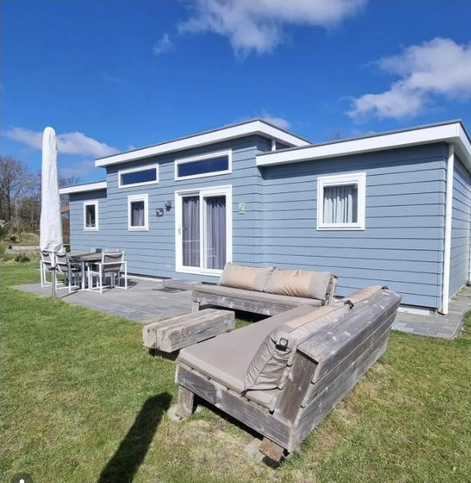
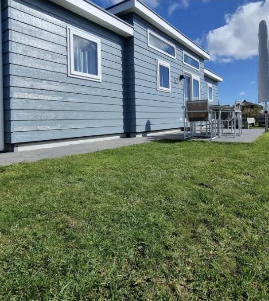
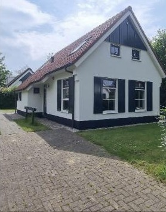
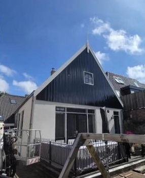
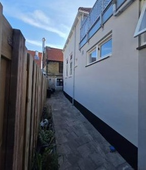
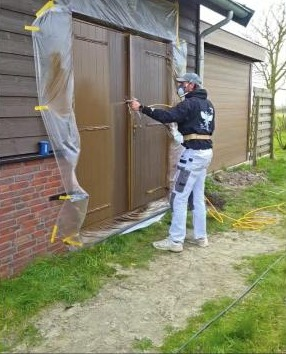

Schilderwerk, onderhoud en advies op Texel. Van vakantiechalet tot woonhuis: netjes voorbereid, strak afgewerkt en met een onderhoudsplan dat jarenlang meegaat.

Bij een vakantiechalet op Texel stond de juiste kleur op geen enkele kleurenwaaier. Clint liet de kleur nabootsen aan de hand van een staal en schilderde het geheel met een duurzame, watergedragen houtbescherming. Dankzij zijn onderhoudsplan is de chalet voor de komende 12 jaar onderhoudsvrij.

Gevels, houtwerk en wanden, binnen en buiten — grondig voorbereid en netjes afgewerkt.
Met een onderhoudsplan blijft je woning of vakantieverblijf er jarenlang goed uitzien.
Hulp bij de juiste kleur en het juiste product, ook als de kleur nergens op een waaier staat.



Clint werkt onder het motto “geeft uw huis de uitstraling die het verdient”. Dat betekent: eerst grondig schuren en afplakken, dan pas kleur erop. Zodat het resultaat er niet alleen mooi uitziet, maar ook jarenlang beschermd blijft.
Voor lastige kleuren zoekt hij de juiste partners erbij, zoals bij het chalet waarvoor hij samen met zijn verfleverancier naar Amsterdam reed om de kleur precies na te laten maken.

Bel, app of mail Clint. Hij denkt graag met je mee over kleur, product en onderhoud.